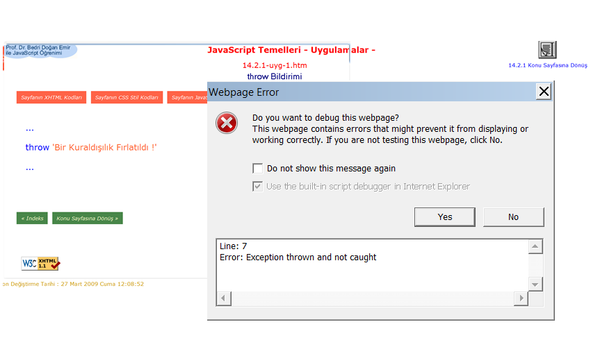

JavaScript Temelleri
Bölüm 14
HATA YÖNETİMİ
Bölüm 14 Sayfa 1
14.1 - Hata Yönteminin Tanıtımı
Hiç bir program apansız dereden çıkmamalıdır. Programlar bir çalışma süreci hatası yarattıklarında, apansız devreden çıkma eğilimindedirler. Bazı hatalar işletim sistemini bile bloke ederek verilerin kaybına neden olabilirler. Bu yüzden, programların hata durumunda davranışlarının önceden olanaklar ölçüsünde planlanmasında yarar bulunmakltadır. Bu şekilde hata olduğunda, sorunsuz bir şekilde program devam edebilir ve gerekli önlemler alınabilir. JavaScript kullanıcılara, oluşan hataları yakalamak ve bir hata yakalandığında programın yürüşünde gerekli düzenlemeleri yapma olnağı sağlamaktadır. Kullanıcılar, ayarıca kendi hatalarını da oluşturarak, JavaScript yorumlayıcısının öntanımlı hataları arasına ekleyebilrler. Hataların yönetiminde en büyük sorun, hangi hatanın ne zaman oluşacağını öngörmek olabilir.
14.1 - Hataların Yayılımı
JavaScript programlarında, normal dışı bir işlem, bir kuraldışılık (exception) (istisna) olarak tanımlanır. Har kuraldışılık bir hata anlamına gelir. Bir kuraldışılığın oluşması, JavaScript yorumlayıcısının programın çalışmasını durdurmasına neden olur. Buna teknik olarak bir kuraldışılığın fırlatılması (excetion throwing) adı verilir. Bir kuraldışılığın fırlatılmasına kısa olarak, hata oluşumu adı da verilebilir.
Bir kuraldışılığın fırlatılması sonumda program çalışması kesilince, JavaScript yorumlayıcısı, bu kuraldışılığın yakalanmaı için en yakın hata yakalama modülünü arara. Hata yakalama modülleri biraz sonra ayrıntıları ile açıklayacağımız, kullanıcı tarafından düzenlenmiş hata sonunda yapılacak işlemleri içeren çalışma bloklarıdır. Hata yakalama blokları aranması, fonksiyonu çağıran kodlara kadar yayılır. Buna hataların yayılımı (Error Propagation) adı verilir. Eğer programda uygun bir hata yakalama modülü bulunamazsa, program kullanıcıya bir uyarı mesajı vererek devreden çıkar.
Programcılar, yaptıkları programların kontrolsuz bir şekilde devreden çıkmasını olanaklar ölçüsünde engellemekle yükümlüdür. Buradaki problem, hangi hatanın ne zaman ve nerede ortaya çıkacağının bulunmasında yaşanır. Bir program, yaşayan bir organizma gibidir. Programcılar, programlarını bir geniş bir süreç içinde daha iyi tanıyabilir ve programın yaratabileceği sorunları daha iyi algılayabilirler. Programcıların gözü daima yaptıkları programlar üzerinde olmalıdır. Bu şekilde, programı sürekli geliştirebilirler ve olası kuraldışılılara karşı uygun önlemler alabilirler.
14.2 - Kullanıcı Tanımlı Hatalar
ECMA-262 standardı 6 tane doğal hata tanımlamıştır. Bunlar, EvalError, RangeError, ReferenceError, SyntaxError, typeError, URIError, olarak belirlenmiştir. Bunlardan biri oluşursa, JavaScript yorumlayıcısı, kuraldışılık fırlatma işlemine geçer, program çalışması durur ve hata yayılımı başlar. Bunların dışında, kullanıcılar da kendileri kuraldışılık fırlatma mekanizmasını çalıştırabilirler. Kullanıcıların çalıştırması ile de aynı kuraldışılık fırlatma işlemi çalışmaya başlar, program çalışması durur ve hata yalımı sürecine girilir. Bu durumda en doğru yöntem, her kuraldışılık için bir kuraldışılık yakalama yönyeminin geliştirilmesidir. Bu şekilde fırlatılmış olan kuraldışılık, tasarlanmış olan kuraldışılık tutma bloğunda yakalanarak bloke edilir ve hata yayılımı süreci uygun bir şekilde sona erdirilmiş olur.
14.2.1 - throw Bildirimi
throw Bildirimi, kullanıcı tanımlı bir kuraldışılığın fırlatılmasına neden olur. Kullanımı,
throw ifade
şeklindedir. throw Bildiriminin bir uygulaması aşağıda görülen JavaScript programında görülmektedir.
... throw 'Bir Kuraldışılık Fırlatıldı !' ...
Bu program iliştirildiği sayfada, bir kullanıcı tanımlı kuraldışılığın fırlatılmasına neden olmakta ve sayfanın görüntülenmesi bir hata mesajı ile engellenmektedir.

Burada verilen hata mesajı, yakalaması olmayan bir kuraldışılığın fırlatılmış olduğu şeklindedir. Bu uygulama sonucu, "Yakalaması Olmayan Bir Kuraldışılığın Oluşmasına Hiçbir Zaman Olanak Verilmemelidir !" şeklinde algılanmalıdır.
14.3 - Hataların Yakalanması
14.3.1 - try, catch ve finally Bildirimleri
try Bildirimi, hataların yakalanacağı bir işlem bloğunu tanımlar. Kullanımı,
try { ... }
şeklindedir. try Bloğunu, catch veya finally blokları veya önce catch sonra finally blokları izlemelidir.
Program kontrolü, bir try bloğunu normal olarak bir hata olmadığında, bloğun sonuna erişildiği veya return, break continue bildirimlerinden birine rastlanması durumunda finally bloğuna atlar. Eğer bir hataya rastlanırsa, kontrol öncecatch sonra finally bloklarına atlar. Eğer catch bloğu yoksa, hata dahi olmazsa kontrol mutlaka finally finally bloğuna atlar. Yani, finally bloğu, try bloğunda ne olursa olsun mutlaka bir kez çalışmış olur.
catch Bloğu, sadecetry bloğunda bir hataya rastlanırsa çalışır. catch Bildiriminin sözdizimi, aşağıdaki gibidir :
catch(e) { ... }
Burada, e yerel herhangibir değişkendir. Bu değişkenin değeri, try bloğunda oluşan hatanın veya fırlatılmış başka bir kuraldışılığın değeridir. Bu değişken sadece blok içinde tanımlıdır.
finally Bloğu fazla yaygın değildir. Hata yakalama çoğunlukla try ve catch blokları yardımı ile yürütülür. Fakat, finally bloğu, çoğunlukla bir kod temizleme bloğu olarak kullanılır.
Eğer, finally bloğunda, return, break continue bildirimlerinden birine rastlanması veya yeni bir kuraldışılığın fırlatılması durumunda eski hata kontrolü ortadan kalkar ve oluşan yeni hatanın yakalama süreci başlatılır.
Bir kullanıcı tanımlı kuraldışılığın fırlatılması ve ve fırlatılan kuraldışılığın bir catch bloğunda yakalanarak etkisiz hale getirilmesi, programın bir finally bloğu ile devam etmesi, örnek bir JavaScript programında uygulanmış ve bu uygulamanın bağlantılı olduğu bir Web sayfasında verdiği sonuç aşağıda gösterilmiştir.
... try{ throw 'Bir Kullanıcı Tanımlı Kuraldışılık Fırlatıldı !' } catch(e) { sonuçYaz('Hata : ' , e, 'b14.3.1-uyg-1-sonuç-1'); sonuçYaz('Hata Yakalandı ','!', 'b14.3.1-uyg-1-sonuç-2'); } finally{ sonuçYaz('Program Devam Ediyor ','!', 'b14.3.1-uyg-1-sonuç-3'); } sonuçYaz('2 +2 = ' , '4', '2.13.2-uyg-1-sonuç-4'); ...
Program Sonucu :